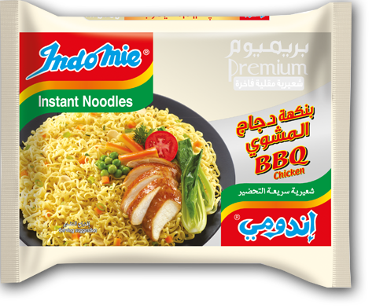
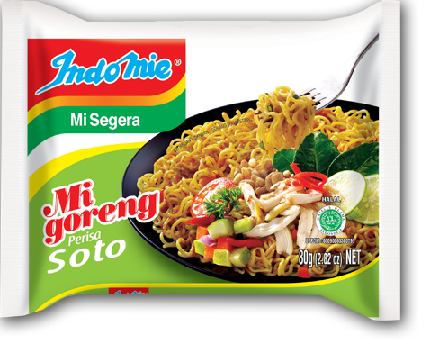
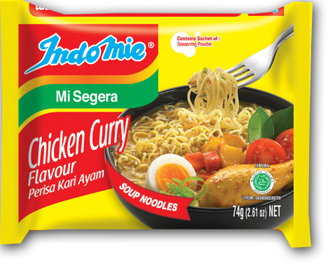

Kontak

 |
Indomie GorengDibuat dari tepung berkualitas tinggi serta bahan dan rempah segar pilihan, sepiring Indomie Mi Goreng pasti akan mencerahkan hari Anda. |
 |
Indomie Goreng PedasBagi pecinta pedas, Indomie Mi Goreng Hot and Spicy menawarkan perpaduan sempurna antara bumbu, cabai, dan bawang goreng renyah yang akan menggugah selera dan menambah sensasi pedas di lidah Anda. |
|  |
Indomie Goreng Kriting Ayam BBQNikmati pengalaman baru menyantap mie kuah dengan pendamping rasa Indomie Curly Noodles BBQ Chicken. Dilengkapai dengan toping sayuran |
|  |
Indomie Goreng SotoIndomie Mi Goreng Soto adalah rasa pertama dan inovatif yang diadopsi dari masakan terkenal Indonesia Soto yang secara tradisional disajikan sebagai sup. Namun Soto Indomie Mi Goreng disajikan tanpa kuah dan tetap menikmati rasa Soto yang terkenal dengan sedikit aroma serai. |
 |
Indomie Goreng Iga PenyetTerinspirasi dari iga sapi favorit Indonesia dengan hiasan cabai merah (Iga Penyet), rasa Indomie Mi Goreng Iga Penyet menawarkan aroma daging sapi panggang unik yang nikmat. |
 |
Indomie Goreng RendangSalah satu sajian terpopuler dunia asal pulau Indonesia, Sumatera, kini hadir dalam sepiring Indomie Mi Goreng Rendang. |
 |
Indomie Goreng SateRasa Sate Indomie Mi Goreng terinspirasi dari masakan ikonik Indonesia, SateAyam Saus Kacang. |
 |
Indomie Goreng SpesialMie keriting merupakan bagian dari varian Indomie premium dengan tekstur tipis lebih lembut dan bentuk mie pipih. |
 |
Indomie Goreng Cabe IjoRasa Indomie Mi Goreng Cabe Ijo menawarkan rasa pedas dan pedas dari cabai hijau segar yang berasal dari masakan terkenal Indonesia, sambal hijau terasi (Cabe Ijo). |
Indomie AyamIndomie rasa Ayam merupakan varian Indomie legendaris pertama. Rasanya yang nikmat, hangat, dan gurih, mengingatkan Anda pada rasa sup ayam klasik rumahan. |
|

|
Indomie Ayam SpesialIndomie rasa ayam spesial memiliki rasa yang lebih lezat dan kaya dibandingkan dengan jenis ayam biasa. Jadikan lebih istimewa dan gurih dengan menambahkan telur rebus, daging ayam, dan sayuran favorit Anda. |

|
Indomie Ayam BawangIndomie Rasa Ayam Bawang menawarkan perpaduan sempurna antara kaldu ayam dan rasa bawang, menghasilkan cita rasa yang kaya dan lezat untuk dinikmati semua orang. |
|  |
Indomie Kari AyamRasa Kari Ayam Indomie menjadi favorit bangsa sejak tahun 1982. Rasanya menawarkan cita rasa dan aroma kari khas Indonesia yang eksotik. |

|
Indomie Kakaruk AyamIndomie Kakaruk Rasa Ayam menawarkan cita rasa ayam yang kaya dan gurih lengkap dengan seledri kering yang nikmat membuat ketagihan. |

|
Indomie SayurIndomie rasa Sayur menawarkan rasa sayur yang ringan dan menyegarkan dengan sedikit rasa jeruk nipis. Tambahkan beberapa sayuran segar untuk menjadikannya makanan yang lezat. |
Indomie Daging SapiRasa kaldu sapi yang kaya rasa hangat dan menenangkan, cocok menjadi teman di cuaca dingin dan hujan. |
|
Indomie UdangRasa Indomie Udang menghadirkan kelezatan laut yang kaya ke dalam semangkuk mie Anda. Tambahkan beberapa makanan laut dan sayuran segar untuk membuat hidangan yang nikmat. |
|
Indomie Soto SpesialSoto adalah masakan berbahan dasar sup Indonesia, kaya akan rempah-rempah dengan serai sebagai bagian dari bahan-bahannya. Indomie Soto Special hadir dengan tambahan hiasan 'koya' untuk menambah aroma Soto. |